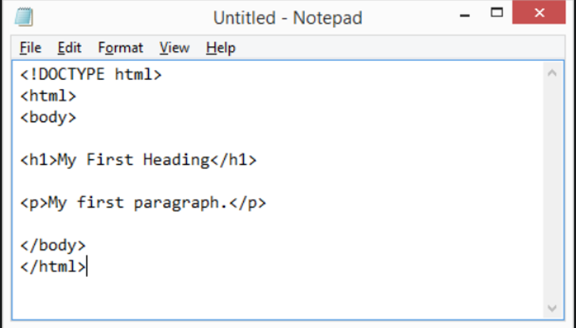
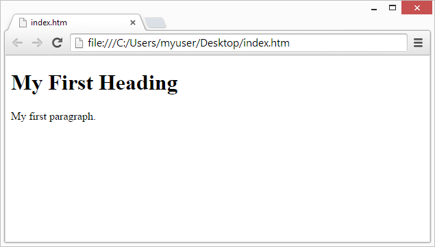

Trình biên tập HTML
Học HTML bằng Notepad hoặc TextEdit
Có thể tạo và chỉnh sửa các trang web bẳng trình soạn thảo HTML chuyên nghiệp.
Tuy nhiên, để học HTML, chúng tôi khuyên bạn nên sử dụng trình soạn thảo văn bản đơn giản như Notepad(PC) hoặc TextEdit (Mac).
Chúng tôi tin rằng bạn sử dụng trình soạn thảo văn bản đơn giản là một cách tốt để học HTML.
Thực hiện theo các bước dưới đây để tạo trang web đầu tiên của bạn bằng Notepad hoặc TextEdit.
Bước 1: Mở Notepad (PC)
Windows 8 trở lên:
Mở Màn hình Bắt đầu (biểu tượng cửa sổ ở góc dưới bên trái màn hình). Nhập Notepad .
Windows 7 hoặc phiên bản cũ hơn:
Mở Bắt đầu > Chương trình > Phụ kiện > Notepad
Bước 1: Mở TextEdit (Mac)
Mở Finder > Ứng dụng > TextEdit
Ngoài ra, hãy thay đổi một số tùy chọn để ứng dụng lưu tệp chính xác. Trong Tùy chọn > Định dạng > chọn "Văn bản thuần túy"
Sau đó, trong mục "Mở và Lưu", hãy đánh dấu vào ô có nội dung "Hiển thị tệp HTML dưới dạng mã HTML thay vì văn bản đã định dạng".
Sau đó mở một tài liệu mới để đặt mã.
Bước 2: Viết một số HTML
Viết hoặc sao chép mã HTML sau vào Notepad:

Bước 3: Lưu trang HTML
Lưu tệp trên máy tính của bạn. Chọn Tệp > Lưu dưới dạng trong menu Notepad.
Đặt tên tệp là "index.htm" và thiết lập mã hóa thành UTF-8 (là mã hóa được ưu tiên cho các tệp HTML).
Mẹo:Bạn có thể sử dụng .htm hoặc .html làm phần mở rộng tệp. Không có sự khác biệt; tùy thuộc vào bạn.
Bước 4: Xem trang HTML trong trình duyệt của bạn
Mở tệp HTML đã lưu trong trình duyệt yêu thích của bạn (nhấp đúp vào tệp hoặc nhấp chuột phải - và chọn "Mở bằng").
Kết quả sẽ trông giống như thế này:
